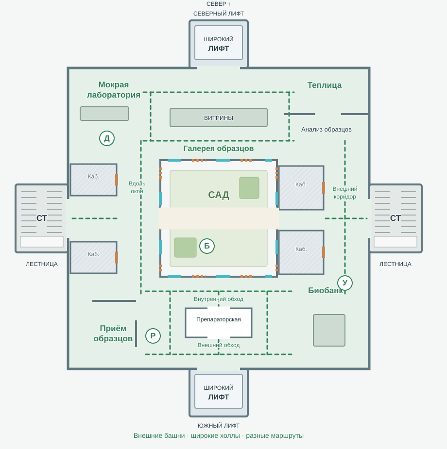
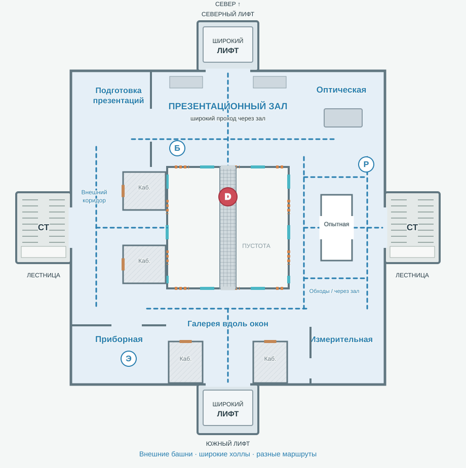
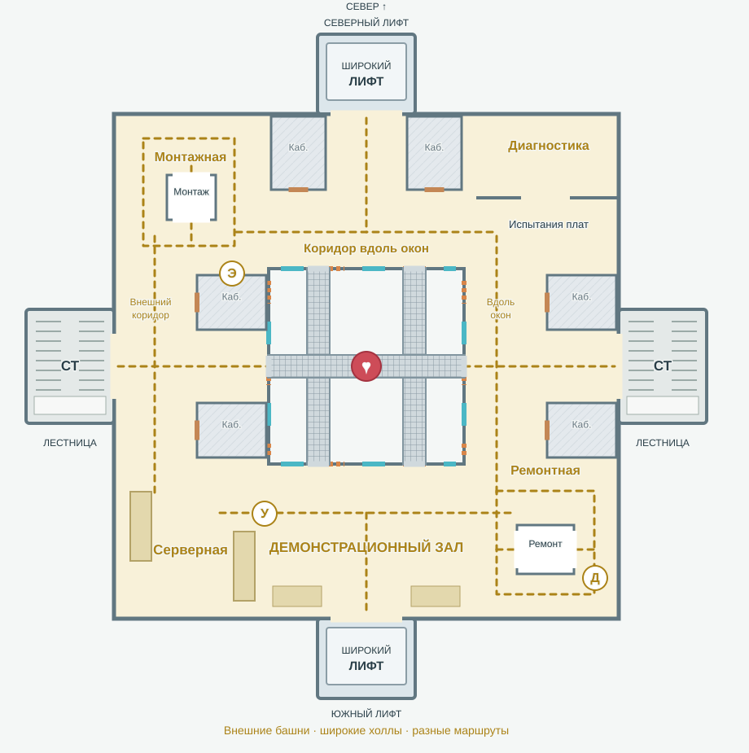

12.10.2026: планировка 02 принята как основа играбельной версии. Реализация передана в новый чат «Колодец — играбельная версия карты». Указанные ниже предварительные статусы отражают момент подготовки концепта; актуальное решение сохранено в decisions.json и implementation-handoff.json.
Star Tournament · 11.10.2026 · обсуждение архитектуры
Колодец / планировка 02
Пользователь принял визуальный концепт. В этой версии исправлены лифты, вертикальные связи вынесены за квадрат, расширены проходы и усложнена внутренняя топология. Это концепт, а не реализация или приёмка Player.
01 · БИОРАЗРАБОТКИ

Залы и две петли
На севере галерея образцов разветвляется вокруг демонстрационного блока. Западный коридор идёт вдоль окон, кабинеты стоят у наружной стены. На востоке всё наоборот: кабинеты у колодца, широкий коридор снаружи. Южная препараторская имеет два входа и два обхода, поэтому даёт третью связь между соседними холлами.
Штриховка — недоступные кабинеты с отдельными закрытыми дверями. Белый блок с проёмами — игровое помещение, которое можно пересечь. Пунктир показывает альтернативные пути, а не навигацию, проверенную в движке.
02 · ФИЗИКА

Большой зал и испытательный блок
Север — широкий проходной презентационный зал. Запад — защищённый наружный коридор, отделённый от окон кабинетами. Восточный испытательный блок можно обойти с обеих сторон или пересечь через две двери. Южная галерея проходит вдоль окон; кабинеты с закрытыми дверями занимают наружную половину крыла.
Штриховка — недоступные кабинеты с отдельными закрытыми дверями. Белый блок с проёмами — игровое помещение, которое можно пересечь. Пунктир показывает альтернативные пути, а не навигацию, проверенную в движке.
03 · ЭЛЕКТРОНИКА

Смена внутреннего и внешнего маршрута
Северный коридор идёт вдоль окон, западный — у наружной стены, восточный снова у окон. Поперечные холлы связывают их с вынесенными лестницами и мостами. На юге — широкий демонстрационный зал. Северо-западная монтажная и юго-восточная ремонтная имеют проходные рабочие комнаты с двумя дверями и внешние обходы: можно пересечь помещение или обойти его.
Штриховка — недоступные кабинеты с отдельными закрытыми дверями. Белый блок с проёмами — игровое помещение, которое можно пересечь. Пунктир показывает альтернативные пути, а не навигацию, проверенную в движке.
Лифты: исправленное поведение
Начав рейс, лифт доезжает до противоположного крайнего этажа, даже если все пассажиры спрыгнули. На втором этаже можно выйти на ходу; это не отменяет рейс и не останавливает платформу.
Северная платформа изначально на третьем этаже, южная на первом. Посадка запускает задержку ровно 1 секунда. Внизу рейс направлен вверх, наверху — вниз. После прибытия лифт стоит; для следующего рейса предлагается новая посадка после освобождения платформы, чтобы стоящий пассажир не запускал бесконечное движение туда-сюда. Это уточнение повторного запуска ещё не согласовано отдельно.
Лифтовые башни стоят снаружи на севере и юге. Широкая площадка соединяется с отдельным холлом каждого этажа; шахта и направляющие не занимают коридор и не заслоняют колодец. Путь к мосту проходит через холл, а не через платформу. В первом приближении можно пробовать платформу около 6×6 м; окончательный размер ещё не выбран.
Боты учитывают положение, направление и время прибытия платформы, входят целиком, едут на движущейся опоре и могут выйти на втором этаже. Если лифт уехал на другой край и не возвращается, бот выбирает лестницу. Сход пассажиров не сбрасывает цель рейса. Snapshot/restore хранит цель, высоту, направление и таймер; Pause останавливает симуляцию, Repeat восстанавливает исходные положения.
Новая организация помещений
Пять типов пространства
1. Проходной зал на всю глубину крыла.
2. Широкий коридор вдоль окон, закрытые кабинеты снаружи.
3. Широкий внешний коридор, кабинеты со стороны колодца.
4. Два обхода вокруг лабораторного блока и проход через его двери.
5. Угловой холл с несколькими выходами, смещёнными проёмами и крупным островом оборудования.
Каждый этаж сочетает типы по-разному. Узлы маршрута становятся залами с выбором выхода. Закрытые кабинеты сами не считаются маршрутами: дополнительные связи создают реальные проёмы проходных лабораторий и обходы.
Размеры и читаемость
Вместо прежних проходов около 3 м предлагается начинать с коридоров 5–6 м и залов шириной 10–14 м. Это диапазоны для следующего блокинга, не утверждённые параметры. Масштаб корпуса и колодца нужно подбирать вместе с временем обхода; схема не является размерным чертежом.
Сложность даёт выбор пути, а не тесноту: без частых узких дверей, длинных глухих тупиков и мебели на поворотах. Высокое оборудование стоит у стен, рабочие острова имеют широкие обходы. Точки возрождения будут переразмещены после проверки обзора в новой геометрии; прежние S-маркеры не переносились автоматически.
Сохранённые игровые опоры
| Этаж | Оружие и бонусы |
|---|
| 01 | Дробовик в мокрой лаборатории, ракетница в юго-западной приёмной, броня в саду, ускорение на восточном маршруте. |
| 02 | Урон на мосту север–юг, ракетница в восточной части, резак в юго-западной приборной, броня в презентационном зале. |
| 03 | Лечение в центре Н, резак на западе, дробовик в юго-восточной ремонтной, ускорение на юго-западе. |
Число и виды предметов сохранены из первого предложения, их точки подстроены под новые помещения. Винтовка стартовая. Мосты и сад сохраняют роль быстрых открытых переходов. Точные anchors, прострелы, безопасные спуски и спавны требуют проверки в игровом блокинге.
Принятое оформление
Белая яркая технологичная лаборатория; зелёные биоразработки, синяя физика, жёлтая электроника. Полосы и надписи соответствуют этажу. Окна чередуют непробиваемое стекло и открытые проёмы.

Художественный эскиз иллюстрирует материалы и атмосферу. Актуальные помещения и внешние башни задаются планировкой 02; предыдущий разрез не является её чертежом.
Следующий шаг
Обсудить эту топологию и уточнить повторный запуск лифта после прибытия с пассажиром. Затем, по отдельной команде на реализацию, оформить согласованный scope и проверить игровой блокинг. Код, OpenSpec, Unity-процессы и сборки здесь не менялись.
Сохранена история: первый концепт. Авторизована переработка концепта; новая планировка ещё не принята пользователем.